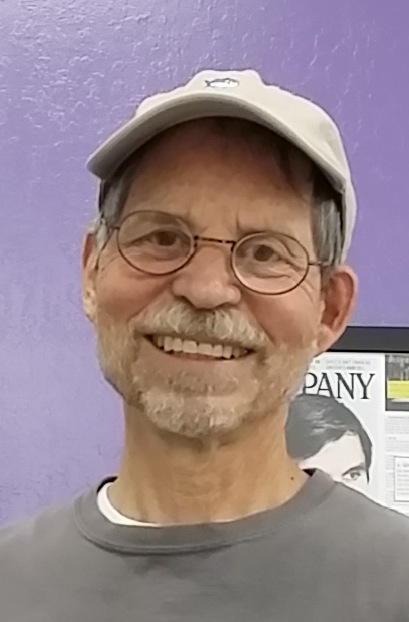
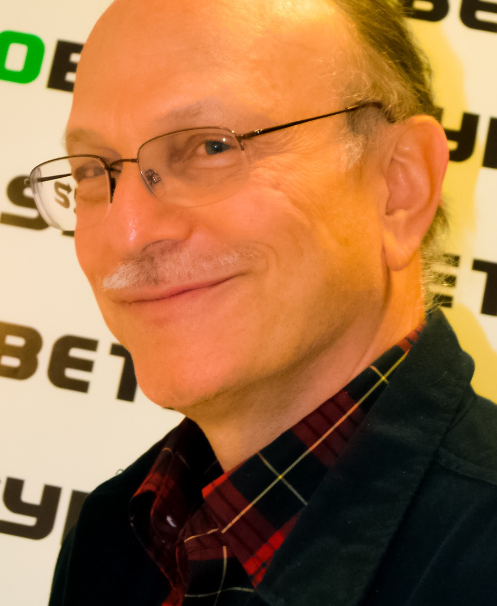

God give me unclouded eyes and freedom from haste. God give me a
quiet and relentless anger against all pretense and all pretentious work
and all work left slack and unfinished. God give me a restlessness
whereby I may neither sleep nor accept praise till my observed results
equal my calculated results or in pious glee I discover and assault my
error. God give me strength not to trust to God!”
"Arrowsmith", Sinclair Lewis
Who is a Phytonaut?
A phytonaut stands on a three legged stool. The first leg is education/training. The second
quality science. The third application of that knowledge to the real world.
It is a cliché but it is true - one's education and training are never complete. This is especially
true in light of the ever-increasing rate at which papers, discoveries, and insights are being made. As a
result, we need to be both vigilant and prudent about keeping up with the latest cutting edge research.
While all this is well and good for those that have some training, what about those who do not? An
important piece of the phytonautic’s mission is to test the hypothesis that one can get quality
education/training without the need for an advanced degree.
As highlighted by the quote from ‘Arrowsmith’ above, the quality of science must be of the
highest standards. Quality does not mean cutting edge here, quality means design of the experiment,
inclusion of controls, reproducibility, and a clear separation from results and conclusions. A phytonaut
strives to put quality of science over all else.
Finally, a phytonaut tries to apply their hard won knowledge and even harder fought results, to
the larger world. We face a number of daunting challenging in the relatively near to medium term
future. To tackle these challenges and turn them into opportunities, we need an army of well-trained,
rigorous, and creative scientists working together.
So are you a Phytonaut?
Mission
In the beginning of the summer of 2015, a few of local biology enthusiasts got together in Sunnyvale and observed that since 2011, despite mushrooming of biology community labs all over country, non-institutional scientists or enthusiasts have faced similar struggles. These included lack of formal community structure to encourage, review, resource, and guide their dream projects. The Phytonautics Biology Group was formed to address this and create a pan DIY institution to aid the practicing biologists achieve results rivaling the establishment science and industry and perform outreach and education of untutored in technologies relating to biology.
Founders
| Shashank Goel |
Kyle Taylor |
Johan Sosa |
Jay Hanson |
Arnie Wernick |
| Era Goel |
Greg Boggy |
Brian Noughton |
 Anja Scholze Anja Scholze |
 Eric Espinosa Eric Espinosa |
| Brad Hakes |
Fabio Rupp |
David Marash |
Rikke Rasmussan |
Do you remember when you were a child, and you bit in to a ripe tomato?
... and your head exploded with the taste?
... and the skin burst in streams of red juice with seed falling to the ground?
... and all you could think of was how good it all was?
Bring back flavour to your life. It's too short to waste on mediocre food.